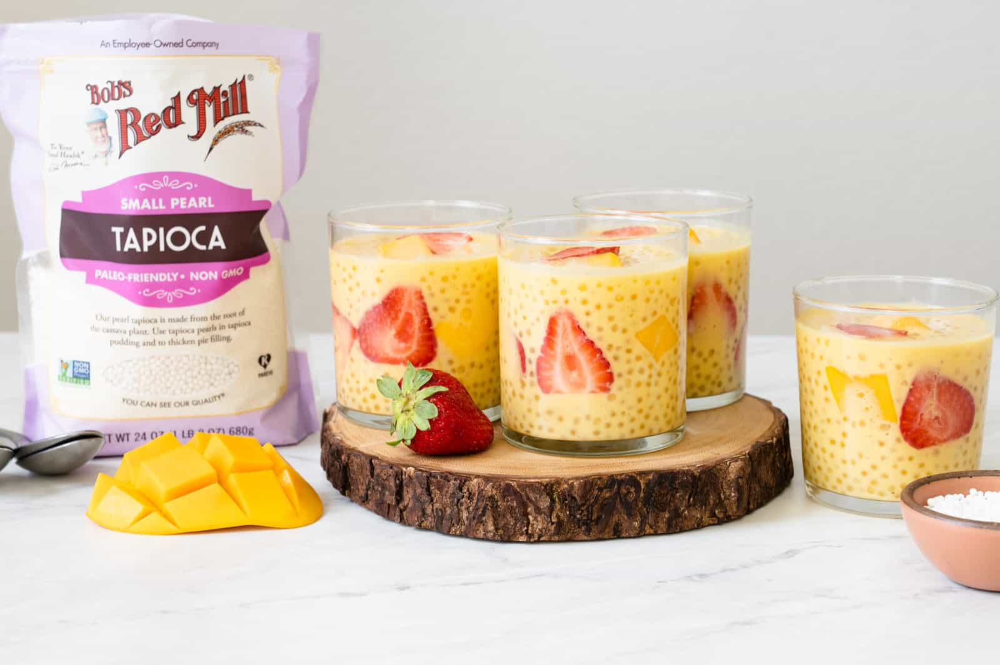

Mango Tapioca Pudding

Description
This mango tapioca pudding (aka mango sago) is a refreshing summer dessert made with easy-to-find ingredients. It's a crowd pleaser!
Ingredients
- 8 cups (1.9L) water
- 3/4 cup (155g) small tapioca pearls
- 1 cup (235ml) whole or 2% milk
- 3/4 cup (175ml) full-fat canned coconut milk
- 3 1/2 tablespoons honey, divided, add more to taste
- 3 medium-sized mangoes (about 775 to 800 grams), see note 1
- 1 cup sliced strawberries
Steps
Cook Pearls
- Add the water to a pot or large saucepan and bring it to boil over high heat. DO NOT add the tapioca pearls when the water is still cold (see note 2). Reduce the heat slightly to medium-high and add the tapioca pearls. Give the pearls a quick stir. Cook the pearls for 15 minutes and turn off the heat. The pearls will be translucent around the exterior with solid white specks in the center. Cover the pot with a lid and let the pearls sit for another 10 to 15 minutes, until the pearls look completely translucent. It's okay if a few pearls here and there still have tiny white specks in the center.
- Drain the pearls and rinse them under cold water. Transfer them to a large bowl with cold tap water. Submerging the pearls completely in cold water helps them to cool faster and makes them less sticky. Let that sit while you prepare the other components of the tapioca pudding.
Prepare Mango Puree
- Add the milk and coconut milk to a saucepan and bring to a boil. Do not cover the saucepan with a lid because it's very easy for the milk to boil over. Turn off the heat and add 2 tablespoons of honey. (See note 3 for the reasoning behind boiling the milk.) Let the milk cool for 5 to 10 minutes.
- Slice a mango along the oblong pit in the center. Using the tip of your knife, make crosswise cuts inside the 2 mango slices to make cubes. Use your fingers to bend the mango slices so that the mango cubes protrude. Then, run the knife below the cubes to slice them off.
- Take the piece of mango containing the central pit and use a paring knife to peel off the skin. Then, use the knife to cut off as much flesh from the pit as possible. I generally use the flesh around the pit for the mango puree.
- Measure 1 1/4 cups (225 grams) of mango flesh and transfer it to the bowl of a high-speed blender. Add the warmed milk to the blender. Blend everything until smooth. Pour the mango puree into a large bowl.
Finish Tapioca Pudding
- Drain the tapioca pearls and drizzle 1 1/2 tablespoons of honey over the pearls. Toss to coat the pearls with the honey. Add the tapioca pearls to the bowl with the mango puree and stir. Next, add the remaining mango cubes/chunks and sliced strawberries to the bowl. Stir to combine. Taste the mango tapioca pudding and add more honey, if necessary.
- Chill the mango tapioca pudding for at least 2 hours before serving.
Notes
- I like using Ataulfo/honey mangoes because of their flavor, but you can use whatever mango you can find. If you want more mango chunks inside the tapioca pudding, you'll need at least 4 Ataulfo mangoes. If you're using frozen mangoes, defrost them before making this recipeThe tapioca pearls will melt together if you add them when the water is cold or insufficiently heated through. Wait until the water boils before adding the pearls.
- It's not completely necessary to boil the milk. During my recipe testing, I noticed that the batches of tapioca pudding made with unboiled milk started to turn a bit gray after a few hours. However, the pudding held its golden color better when I used boiled milk. That's why I recommend boiling the milk.
- A thicker tapioca pudding: Here are some adjustments you can make. Instead of using 1 cup of fresh milk, use 3/4 cup instead. Also, increase the amount of mango you use for the puree from 1 1/4 cups to 1 1/2 cups (about 250 grams). You'll definitely need at least 4 Ataulfo/honey mangoes total if you take this route. Because of the additional mango in the puree, I suggest decreasing the amount of honey by 1/2 tablespoon when you blend the puree. Once you mix all the ingredients together, taste the tapioca pudding and add more honey if necessary.
Link to the original detailed recipe with exhaustive explanations. I take no credit for it.